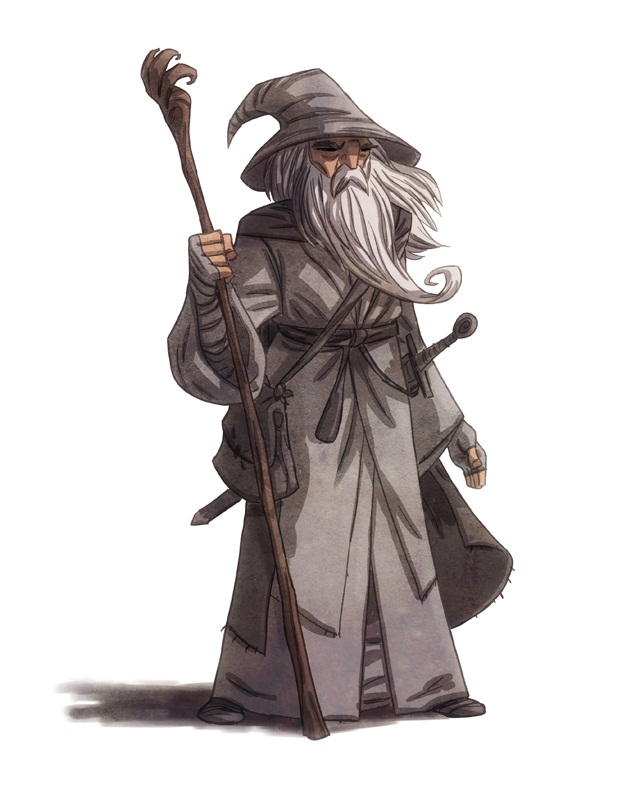

Arrival in Middle-earth, c. III 1000
The Wizards arrived in Middle-earth after the end of the first millennium of the Third Age. They were sent by the Valar to aid Elves and Men, but none knew this but Círdan the Shipwright, Master of the Grey Havens where their ships put in. Though Saruman was at that time the acknowledged leader of the Wizards, Círdan saw that Gandalf was in fact the greater, and secretly gave him the Red Ring Narya to aid him in his quest.For almost fifteen centuries, Gandalf wandered the northern and western regions of Middle-earth, learning of its lands and cultures. He was closest in friendship with the Elves, and especially Elrond, who had learned of his origins from Círdan.
Powers and Abilities

Enhanced Strength
Gandalf has shown to be stronger than the average man, being able to grapple a Balrog as Gandalf the Grey.
Vast Wisdom
Gandalf is officially one of the wisest Maiar and acts as the mentor of his companies, offering them his wisdom from millenia of experience.
Spells
Being a Wizard, Gandalf can cast various spells for a variety of magical effects.